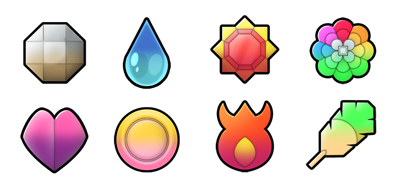

This is an open source project hosted on GitHub. Fell free to step by.
There are 49 wild pokemons. Try to name them all. You have 200 secs. 1 point for correct guess, -1 if wrong. +1 bonus point for remaining time (max 10). See high scores.
Hope this helps you to become the greatest Pokemon trainer ever! :)
